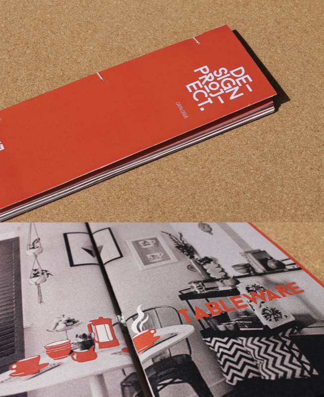
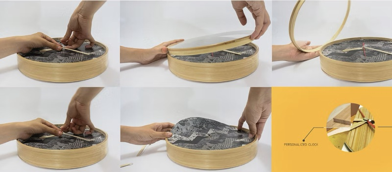
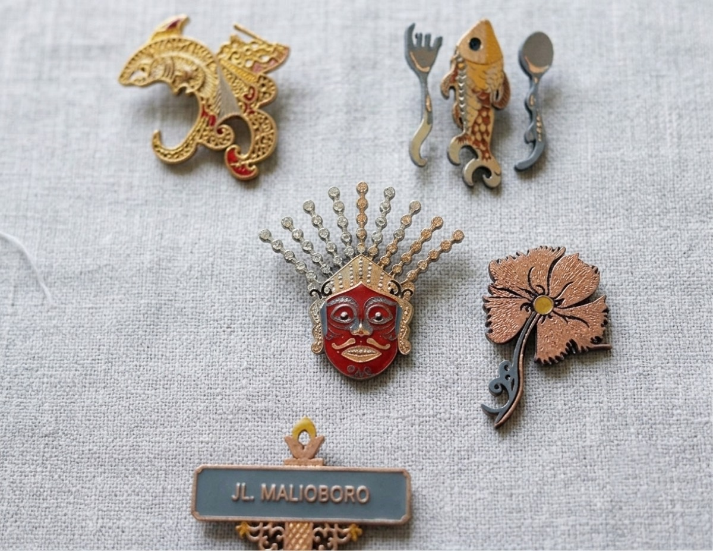
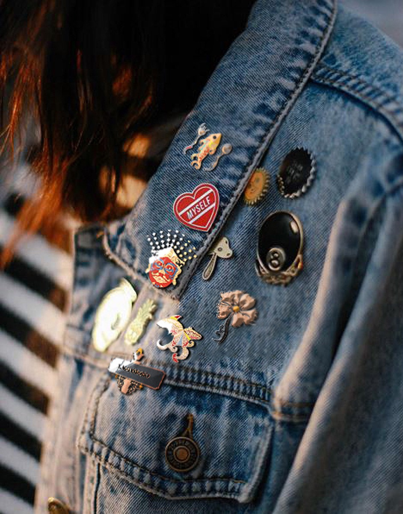
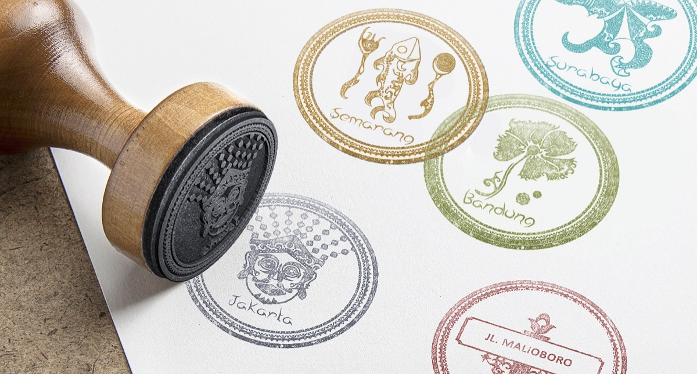
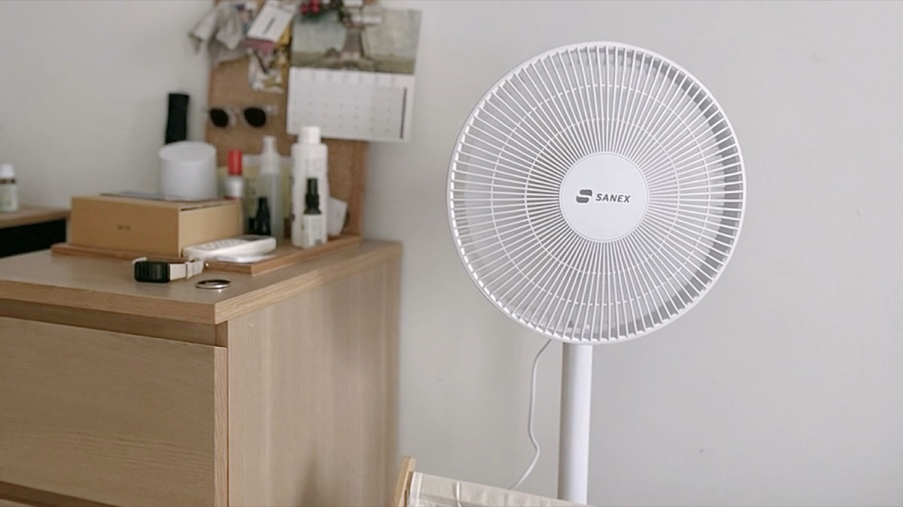
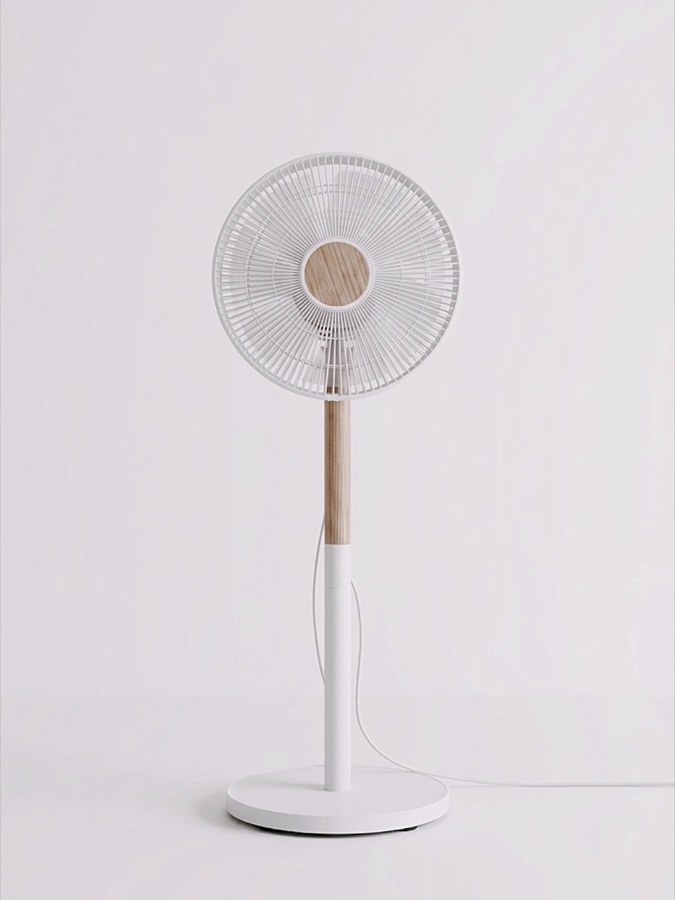
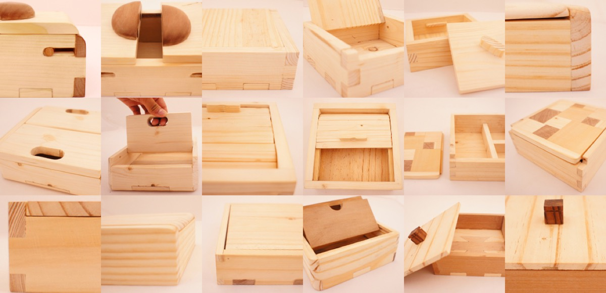
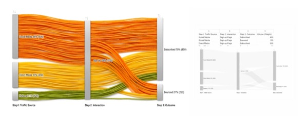

Concert Info for BTS
A concert info hub for Indonesian ARMY. 419 visitors in 30 days, 35 returning, 1m 45s average session. Zero ad spend. Apparently word travels fast in the fandom.
army-bookmark.github.io

Exhibition
In collaborative projects, I serve as the lead for layout design and creative direction for Design Exhibition, I partner with illustrators to conceptualize the visual narrative, and also ensuring the final binding and production.
Freestyle Coloring Book
6 titles coloring book + book binding myself. It built on one idea: outlines shouldn't dominate, so I sketched them loose, color wherever feels right. Sold 50+ copies without expecting to. ^^
@contourgestalt
Slice of fortune cookie
Design challenge here is to learn vibe coding with zero cost! (no subscription at all only effort!)
orange-table.github.io/slice-of-fortune


Personalize clock
Upcycle material with collage technique. With personalised concept it gave freedom to the user to change the clock background as they want.


Wood waste exploration for USB Cover
Souvenir made from local wood waste (rosewood, pine, coconut). Made for ISYF & Microsoft. Sold out now!



Transforming Tradition
Indonesia has no official travel souvenir. We borrowed from Dayak Kenyah and Kayan tradition — where tattoos mark every place wandered, and turned it into collectible stamps, stickers, badges, and pins that represent each region.


How to make an industrialized product feel less industrial?
Before: all white, straight from the factory. After: wood texture added by hand. The real surprise was how many people asked where to buy it.

Wooden Box Creation
Small wooden boxes made without a single drop of glue. Pure wood joinery, exploring different joint types and compositions.

Campaign Report as Sankey Diagram
I combined technical report with AI visual design to create playful, engaging campaign reports. Analyzed raw campaign data for a local food distributor into clear Sankey diagrams. Using Google Sheets, Tableau, and Gemini AI.